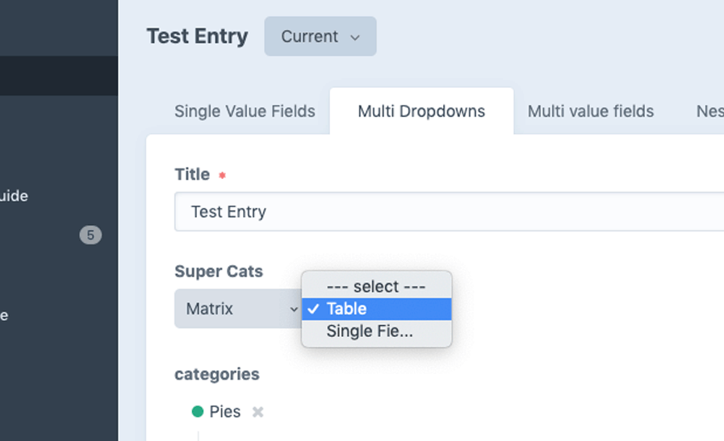

Editables
Front-end editing for Craft CMS
Easily convert fields so they can be edited on the front end of your site.
$79
Install / Try / Buy in the Craft plugin store
composer require veyfinework/editables

Super Dropdown
Dropdowns in multiples, series & hierarchies
from Categories, Entries, Twig templates, or data
Create complex, linked dropdown fields...
$10
Install / Try / Buy in the Craft plugin store
composer require veyfinework/super-dropdown